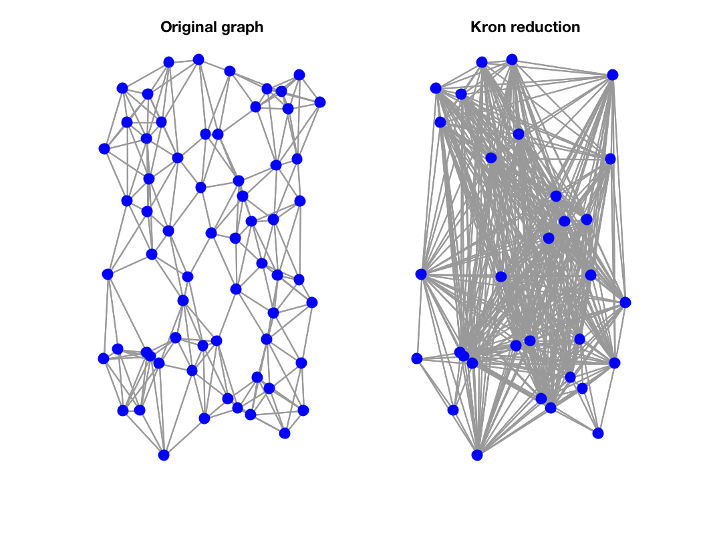

Greduced=gsp_kron_reduce(G,keep_inds); Lreduced=gsp_kron_reduce(L,keep_inds);
| G | Graph structure or graph Laplacian matrix. |
| keep_inds | The set of indices to keep in the reduced graph. |
| Greduced | The Kron-reduced graph structure or Laplacian. |
'gsp_kron_reduce(G,keep_inds)' performs Kron reduction:
If a matrix is given, then a matrix is returned
Example:
N = 64;
param.distribute = 1;
param.Nc = 5;
param.regular = 1;
G = gsp_sensor(N,param);
ind = 1:2:N;
Gnew = gsp_kron_reduction( G,ind );
figure;
subplot(121)
gsp_plot_graph(G);
title('Original graph');
subplot(122)
gsp_plot_graph(Gnew);
title('Kron reduction');

Notes: may be able to speed this up with LAMG toolbox
F. Dorfler and F. Bullo. Kron reduction of graphs with applications to electrical networks. Circuits and Systems I: Regular Papers, IEEE Transactions on, 60(1):150--163, 2013.